Preface
This is a blog I wrote between my last year in secondary
school and my second year in college (May 2007 to April
2009). When I found out that it had unbelievably survived
in my archive for about ten years after I removed it from
the internet, I decided to restore it here as a single,
static html page. Here is a bit of its history.
The internet in the 2000s
It was that beautiful period when the internet was still a
place with good content (well, mostly…), and these music
blogs were a perfect example of that.
People would upload (admittedly dubiously-acquired) albums
and share them, usually accompanied by a review. One could
find all kinds of artists, some that would be really hard
to discover without access to a good record store.
As blog authors searched online, they would find other
similar blogs and many kept a list with links to "other
cool blogs to check out", creating a huge web of
interconnected blogs.
Many of them also had comment sections, where people talked
about the artists and albums and made suggestions. A place
for discussion (mostly civilized) in the age before social
networks.
All this meant that there was an almost endless stream of
albums and artists to discover, if one had the time. And I
had plenty.
The Jack is born
In 2007, I had already been playing music for one or two
years (little did I know at that time that starting to
learn bass guitar would leave me completely addicted to
music and to all kinds of instruments later on…). I had an
enormous collection of albums that I felt people
needed to know about. So I decided to start my own
blog.
The name of the blog is also the name of my first band,
although I cannot remember which one came first. It was
kind of a joke, where I would give things the most mundane
names like "Jack" and "Bob", out of pure laziness.
Judging by the number of comments and what people said, it
had a pretty decent traffic. According to a post, in
October 2007 the blog had been already viewed 10k times,
although it doesn't mention when the counter was set up.
Unfortunately, that is the only data point I have.
Warning: unauthorized reproduction or distribution of
this copyrighted work is illegal
Back then, I did not think of these blogs as something bad,
and I still don't. Contrary to popular belief, a
significant part of my collection was copied from actual,
physical CDs.
The place where I lived was not the best for finding good
albums, specially from the styles and periods I was
interested in. I would still buy every one I could find
(and could afford), and most of them ended up in the blog.
But the majority of my collection was discovered by
browsing other people's blogs. Albums that I would
otherwise never have access to.
Also, if it weren't for these blogs, I am absolutely sure I
would not have developed the appreciation for music that I
have today. Maybe I would not even be a musician (ok, that
might have been a good thing). And I am sure I am not, by
far, the only person who feels that way.
The end(?)
But sadly, among many other things, I had to stop writing
when college started demanding more and more time. In a
strangely foresighted move, I decided to make a backup of
the content (originally created on Google's Blogger), which
I have now restored after a lot of xml and html fiddling.
I have decided to keep the content in its original
secondary-school spur-of-the-moment mostly-poorly-written
sometimes-brilliant form, for maximum personal
embarrassment. The reviews had amazing remarks such as
"this album needs no comments, specially because I'm
feeling to lazy to write any". But also, some I really
enjoyed reading again. For example, when I wrote about Syd
Barret's death and said "a moment of cacophony for him". I
am going to steal that from my past self.
The original links in the posts remain, but they obviously
do not work anymore (I haven't checked all of them, but
there are easier ways to find music online these days).
Almost all of the posts had an image, but I've kept only
the ones that, in a testament to the perpetuity of the
internet, had survived. The comments are also there, in an
effort to also embarrass some of my friends.
Overall, it was really funny to read something written by
myself ten years ago. In a way, it was surprising to see
how some of my personal beliefs were simply not there at
that age, but others that I did not expect were.
I had a lot of fun reading it, and hope you will too.
Badongo
Como baixar no badongo??
-
Clique no link:
-
Vai abrir a página do Badongo em outra janela ou aba.
Escreva o código:
-
Dê um Enter ou clique em "Download Your File Here" e
uma outra página vai abrir (...) onde terá uma contagem
regressiva:
-
Quando a contagem terminar, é só clicar em "Download
Your File" e o download vai começar em alguns segundos:
-
Seja feliz com seu cd.
Criado: 2007-05-12T14:38:00.000-03:00
Atualizado: 2007-08-31T16:36:18.133-03:00
Megaupload
Como baixar no Megaupload??
-
Clique no link:
-
Pode aparecer essa mensagem, sinto muito, é só esperar
um tempo, geralmente um dia, porque não há o que
fazer...
-
Se não aparecer essa mensagem, mas aparecer uma dizendo
que todos os slots atribuídos a seu país estão
ocupados, dê uma lida
nessa postagem.
-
Se não apareceu nenhuma mensagem estranha, a tela vai
mostrar um campo para senha. Digite ela e clique em OK:
-
Uma novo tela vai aparecer, é só esperar a cotagem.
-
Clique em "Free Download".
-
Seja feliz com seu cd.
Criado: 2007-05-12T15:36:00.000-03:00
Atualizado: 2007-09-12T23:59:23.342-03:00
4 Shared
Como baixar cds no 4 Shared??
-
Clique no link:
-
Vai abrir uma janela onde pede a senha para a pasta. A
senha de todas desse blog é
"pissanga-thejack.blogspot.com". Digite e dê OK:
-
A pasta vai ser carregada. Note que, diferente de
outros sites de hospedagem, aparecem os arquivos da
pasta e dá pra baixar as músicas separadamente, só a
capa, etc. Escolha o arquivo que você quer e clique no
globo com a seta verde:
-
Clique em "Download File":
-
Seja feliz com seu cd:
Criado: 2007-05-12T16:51:00.000-03:00
Atualizado: 2007-08-31T17:22:14.342-03:00
Iron Maiden - Iron Maiden
- Prowler
- Remember Tomorrow
- Running Free
- Phantom of the Opera
- Transylvania
- Strange World
- Sanctuary
- Charlotte the Harlot
- Iron Maiden
Criado: 2007-05-13T22:03:00.004-03:00
Atualizado: 2008-06-13T11:33:30.823-03:00
Led Zeppelin - Led Zeppelin IV
- Black Dog
- Rock and Roll
- The Battle of Evermore
- Stairway to Heaven
- Misty Mountain Hop
- Four Sticks
- Going to Caifornia
- When the Levee Breaks
Criado: 2007-05-14T16:56:00.007-03:00
Atualizado: 2008-06-13T11:33:53.446-03:00
Black Sabbath - Paranoid
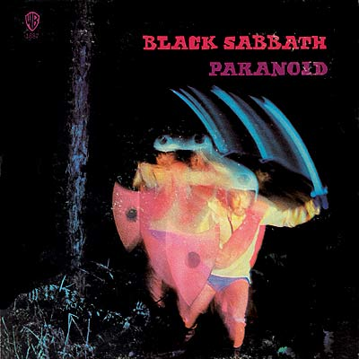
- War Pigs
- Paranoid
- Planet Caravan
- Iron Man
- Eletric Funeral
- Hand of Doom
- Rat Salad
- Fairies Wear Boots
Criado: 2007-05-14T21:33:00.004-03:00
Atualizado: 2008-06-13T11:34:09.609-03:00
Metallica - Master of Puppets
- Battery
- Master of Puppets
- The Thing That Should Not Be
- Welcome Home (Sanitarium)
- Disposable Heroes
- Leper Messiah
- Orion
- Damage, Inc
Criado: 2007-05-16T20:01:00.002-03:00
Atualizado: 2008-06-13T12:34:31.871-03:00
AC/DC - The Razors Edge
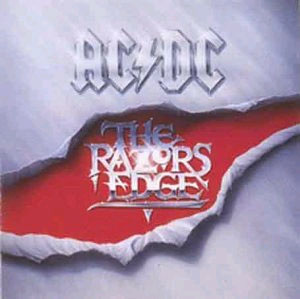
- Thunderstruck
- Fire Your Guns
- Moneytalks
- The Razor's Edge
- Mistress for Christmas
- Rock Your Heart Out
- Are You Ready
- Got You By the Balls
- Shot of Love
- Let's Make It
- Good Bye & Good Riddance to Bad Luck
- If You Dare
Criado: 2007-05-20T18:53:00.002-03:00
Atualizado: 2008-06-13T12:38:44.346-03:00
Deep Purple - Machine Head / Burn
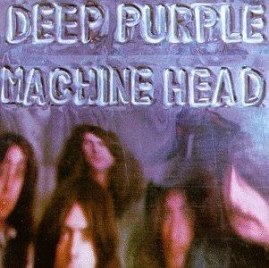
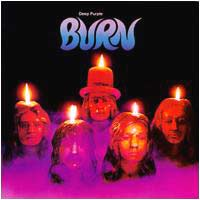
Dois cd's dessa banda realmente foda, provavelmente os 2
melhores deles, mas isso é questão de gosto. O Machine é um
lado mais rock 'n' roll, enquanto o Burn é mais blues, mas
esses dois estilos se misturam na música do Deep, então eu
sugiro baixar os dois e tirar suas prórpias conclusões =).
- Highway Star
- Maybe I'm a Leo
- Pictures of Home
- Never Before
- Smoke on the Water
- Lazy
- Space Truckin
P.S.: tentei, mas não consigo ficar sem escrever...
Criado: 2007-05-25T22:28:00.004-03:00
Atualizado: 2008-06-13T12:43:52.090-03:00
explicações...
O tempo que eu fiquei sem postar foi por problemas técnicos
do Megaupload, mas agora já estou "de volta à ativa". Só
por curiosidade, obviamente, apesar de eu pensar que essa
bodega não ia sair do lugar, hoje constatei que haviam 2
pessoas visualizando meu blog! Eu era uma delas, mas já é
um avanço!
Um abraço para o meu apoiador e para qualquer visitante
vindouro.
Atenciosamente, Pissanga.
Criado: 2007-05-25T23:23:00.000-03:00
Atualizado: 2007-05-25T23:31:08.821-03:00
Guns N' Roses - Appetite for Destruction
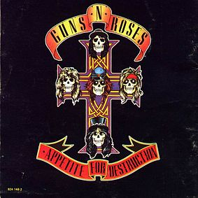
Álbum do Guns, o melhor na minha opinião, tem Paradise
City, Welcome to the Jungle, bom, todas na minha opinião...
Não são dois cds, são só as duas capas diferentes que ele
tem, porque a segunda foi rejeitada pela MTV porque tem o
robozinho safado estuprando a mulher \o/.
- Welcome to the Jungle
- It's So Easy
- Nighttrain
- Out Ta Get Me
- Mr. Brownstone
- Paradise City
- My Michele
- Think About You
- Sweet Child O' Mine
- You're Crazy
- Anything Goes
- Rocket Quen
Criado: 2007-05-26T11:58:00.003-03:00
Atualizado: 2008-06-13T12:50:56.439-03:00
Iron Maiden - The Number of the Beast
(Um dos) Melhor álbum da história.
- Invaders
- of the Damned
- The Prisioner
- 22 Acacia Avenue
- The Number of the Beast
- Run to the Hills
- Gangland
- Hallowed Be Thy Name
Criado: 2007-06-09T23:40:00.002-03:00
Atualizado: 2008-06-13T12:54:22.910-03:00
Shaman - Ritual
Shaman, Shaaman, diabo a quatro, parece que se foi, mas vai
sabe... Se for, que pena, ótima banda.
- Ancient Winds
- Here I Am
- Distant Thunder
- For Tomorrow
- Time Will Come
- Over Your Head
- Fairy Tale
- Blind Spell
- Ritual
- Pride
Criado: 2007-06-09T23:43:00.004-03:00
Atualizado: 2008-06-13T12:58:21.296-03:00
Helloween - Walls of Jericho
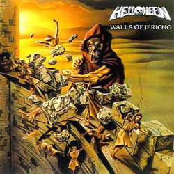
Primeiro cd do Helloween, depois do EP Helloween, pra mim,
desculpem-me os que discordam, Helloween sem Kai Hansen não
é Helloween. Michael Kiske que me desculpe, mas assim não
dá...
Mas o cd é ótimo, um dos meus preferidos deles.
Divirtam-se!
- Walls of Jericho
- Ride the Sky
- Reptile
- Guardians
- Phantoms of Death
- Metal Invaders
- Gorgar
- Heavy Metal
- How Many Tears
Criado: 2007-06-12T22:44:00.002-03:00
Atualizado: 2008-06-13T13:00:02.011-03:00
hospedagem
Devido à camaradagem do servidor do megaupload, que, apesar
de bom, nunca está disponível, a partir de agora vou
hospedar no badongo e no megupload. Mas peço calma,
queridos frequentadores ou visualizadores de meu blog, vai
demorar até eu hospedar todos. Desse jeito, além de duas
opções para baixar, aqueles detentores de banda larga podem
fazer dois downloads ao mesmo tempo =).
Bom, era isso, adeus!
Criado: 2007-06-15T17:27:00.000-03:00
Atualizado: 2007-06-15T17:32:55.116-03:00
Cachorro Grande - As Próximas Horas Serão Muito Boas
Provavelmente poucos vão conhecer essa banda, ela é aqui da
minha terra, Rio Grande do Sul, é um rock and roll
inspirado nos anos 60-70, muito bom, eles já tem 3 cds
estão gravando o quarto agora, pra quem quiser ver:
- As Coisas que Eu Quero Lhe Falar
- Hey Amigo
- Voce Pode Até Pegar
- Tudo por Você
- Olhar pra Frente
- Agoniada
- Me Perdi
- As Próximas Horas Serão Muito Boas
- Você Não Sabe Nada
- Enquanto o Trem que Espero Não Vem
- Sem Problemas
- Que Loucura!
- O Truque do Ovo
- Insatisfeito
Criado: 2007-06-22T21:37:00.003-03:00
Atualizado: 2008-06-13T13:05:12.335-03:00
Slayer - South of Heaven
Slayer é uma banda muito boa, os caras são os pais do
thrash. Apesar de parecer aquelas bandas de death, pelas
capas de cds e pelas letras, o som é mais um metal
tradicional, mais pesado obviamente. Não tem muito a ver
com os outros cds postados aqui, mas, fazer o que, meus
gostos são muito estranhos...
Divirtam-se!
- South of Heaven
- Silent Scream
- Live Undead
- Behind the Crooked Cross
- Mandatory Suicide
- Ghosts of War
- Read Between the Lines
- Cleanse the Soul
- Dissident Agressor
- Spill the Blood
Criado: 2007-06-24T18:53:00.002-03:00
Atualizado: 2008-06-13T13:07:30.734-03:00
Judas Priest - British Steel
Judas é uma das primeiras bandas do bom e (literalmente)
velho rock 'n' roll que eu conheci, mas uma das melhores na
minha opinião. é aquele rock de couro e moto, que toca nos
bares da highway, se é que os leitores deste humilde
"postador" me entendem.
O som é da mesma vertente de AC/DC, Kiss, etc (na verdade
acho que seria o contrário), sugiro baixar, oh apreciador
do rock.
- Rapid Fire
- Metal Gods
- Breaking the Law
- Grinder
- United
- You Don't Have to Be Old to Be Wise
- Living After Midnight
- The Rage
- Steeler
Criado: 2007-06-25T22:25:00.002-03:00
Atualizado: 2008-06-13T13:09:12.858-03:00
The Jack
Esse fim de semana (ontem, sábado para ser mais exato) teve
o concurso de bandas do meu colégio aqui em Caxias do Sul.
Participaram 4 bandas: Small Box, Mr. Confusion, 220 Voltz
e, obviamente, The Jack.
A abertura foi com nosso professor de geografia, vocalista
e guitarrista da Angels, que fez um ótimo acústico. Depois,
foi anunciada a entrada da Small Box.
Como segunda banda, a nossa. Apesar do que nós
imaginávamos, não estávamos tão nervosos, e o show foi
muito foda.
Aí entrou a Mr. Confusion e depois a 220 Voltz, que é de
uns amigos nossos e fizeram um grande show (até melhor que
o nosso...).
No final, a vencedora foi a The Jack, quase empatada com a
220, mas nós ganhamos, e subimos de novo ao palco para mais
duas músicas.
Esse concurso deu um gás pra banda (principalmente porque a
vencedora ganhava 150 pila), mas também porque foi nosso
primeiro show.
Bom, eu dei upload em umas fotos aí:
Criado: 2007-07-01T14:33:00.000-03:00
Atualizado: 2007-07-03T21:22:05.309-03:00
Mötley Crüe - Girls Girls Girls (2003 re-release)
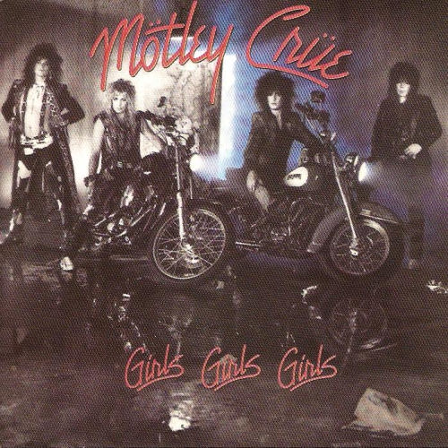
Para os desavisados, Mötley Crüe é uma das mais antigas
bandas de Hard Rock desse mundo mesquinho e desagradável. É
aquele som cru, a guitarra com distorção seca e o baixo com
um ronco forte.
Uma das melhores bandas de hard que eu conheço, irmã de
AC/DC e Whitesnake e, na minha opinião, parelha com as
duas.
Detalhe: observem a hora da publicação, eu realmente não
tenho o que fazer, apesar de ter "aula" amanhã (hoje, na
verdade, já que é 1 e meia).
- Wild Side
- Girls, Girls, Girls
- Dancing on Glass
- Bad Boy Boogie
- Nona
- Five Years Dead!
- All in the Name of...
- Sumthin' for Nuthin'
- You're All I Need
- Jailhouse Rock
- Girls, Girls, Girls [Instrumental]
- Wild Side [Instrumental Remix]
- Rodeo [Bonus Track]
- Nona [Instrumental Demo Idea]
- All in the Name of... [live]
Criado: 2007-07-02T01:19:00.002-03:00
Atualizado: 2008-06-13T13:14:57.488-03:00
Coke-Luxe - É Rockabilly! + Rockabilly Bop
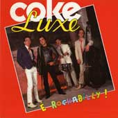
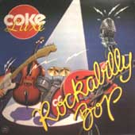
Com certeza muitos se perguntarão ao ver esse post: "Que
merda é essa??". Bom, eu respondo: uma das melhores bandas
brasileiras que eu conheço. Observe o ano: 1983 e 84, ou
seja, os caras são vélhos. Essa é uma banda de São Paulo,
de rockabilly, ela lançou um EP e um CD antes de acabar,
que por acaso seriam esses dois.
Eles ainda se apresentaram várias vezes, até que me 97 o
vocalista Eddy Teddy morreu, e em 2004 o baixista Little
Piga, compositor da marioria das músicas (acreditem, quando
voces ouvirem vão ver que ele não era um compositor comum).
- Rock, o Azarado
- Não Beba Papai, Não Beba
- Bobão
- 20º Andar
- Gata Gatuna
- Amor em A.M.
- Espírito de Porco
- O Rei do Racha
- Buzum
- I.N.P. Rock
- Põe Mais Uma
- Avenida Angélica (demo)
- Moça do Sapato Grande (demo)
- Gata Gatuna (demo)
- Adorável Vagabunda (demo)
- Promete (demo)
- Não Vou Mais Te Esquecer (demo)
- Ouvir O Rock 'N' Roll (demo)
- O Rei do Racha (ao vivo)
- Buzum (demo)
- Rock, O Azarado (ao vivo)
- Pum, O Rock (demo)
Criado: 2007-07-04T09:24:00.003-03:00
Atualizado: 2008-06-13T13:25:11.341-03:00
AC/DC - Highway to Hell
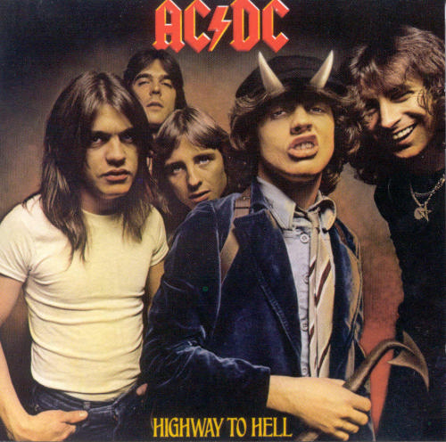
Sexto álbum do AC/DC, dispensa comentários, principalmente
porque eu estou com preguiça de comentá-lo agora. =)
Divirtam-se.
- Highway to Hell
- Girls Got Rythm
- Walk All Over You
- Touch Too Much
- Beating Around the Bush
- Shot Down in Flames
- Get it Hot
- If You Want Blood
- Love Hungry Man
- Night Prowler
Criado: 2007-07-05T22:34:00.003-03:00
Atualizado: 2008-06-13T13:27:44.057-03:00
Mr. Big - Mr. Big
Atenção: se voce também toca contra-baixo, corre o risco
de, ao ouvir esse cd, largar o instrumento (no bom sentido)
e chorar de tristeza. Por quê?? Porque estamos falando da
ex-banda do nosso grande amigo Billy Sheehan, um dos
melhores baixistas da face da terra.
Para ter uma idéia, ouça Addicted to That Rush (a melhor do
cd na minha opinião). A intrudução é simplesmente
humanamente impossível de ser executada. E pra piorar, a
banda tem também Paul Gilbert na guitarra, que é um ótimo
guitarrista e faz um ótimo par com Billy (AHEUAHUEAHUEAHE
<- desconsiderem isso).
Criado: 2007-07-11T16:48:00.001-03:00
Atualizado: 2008-06-13T12:33:58.911-03:00
ZZ Top - Greatest Hits
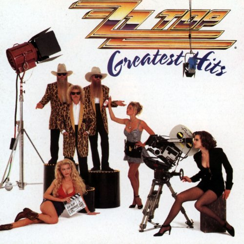
Não sou muito chegado aos "greatest hits", mas essa banda é
muito boa e eu não tenho outro cd aqui, então tem que ser esse.
Apesar do ano do cd ser 1992, esses caras são mais velhos que a
Dercy Gonçalves, fizeram sucesso nos anos 70 e 80, e ainda hoje
fazem shows, ainda com os mesmos membros.
O som é aquele blues-rock foda, influencia principalmente do
Texas, estado de onde vem a banda (o que te obriga a ouvir a
banda, afinal o Texas é o Texas, e vice-versa).
- Gimme All Your Loving
- Sharp Dressed Man
- Rough Boy
- Tush
- My Head's in Mississipi
- Pearl Necklace
- I'm Bad, I'm Nationwide
- Viva Las Vegas
- Doubleback
- Gun Love
- Got Me Under Pressure
- Give It Up
- Cheap Sunglasses
- Sleeping Bag
- Planet of Women
- La Grange
- Tube Snake Boogie
- Legs
Criado: 2007-07-21T14:28:00.001-03:00
Atualizado: 2008-06-16T11:19:06.000-03:00
Megaupload
Queria dar uma pausa aqui para comentar algo que tem muito
a ver com o blog: o Megaupload. Ele era pra ser um site de
hospedagemd e arquivos onde a pessoa entra, clica no botão,
espera um certo tempo e baixa seu tão querido arquivo.
Mas... não é bem assim que funciona. "Como não, dio
sacramento!?". Simples, buscando maior renda, os donos do
site inventaram a famigerada opção de virar um "cliente
premium". Isso significa que não haverá espera, os
downloads serão mais rápidos e, principalmente, os clientes
premium não perdem o serviço quando os servidores estão
sendo arrumados ou quando "todos os slots para o seu país
estão ocupados".
Mas, como a vida não é tão ruim como imaginamos ser, há um
jeito de amenizar isso: ele se chama Megaupload Toolbar.
Quando baixada e instalada, ela garante que a mensagem dos
slots ocupados seja ignorada, facilitando muito a vida dos
clientes free.
Como o Megaupload é muito melhor que o Badongo em termos de
download e upload, eu sugiro que os caros leitores deste
texto façam o download da barra, porque, acreditem, vale
muito a pena. Ela não tem vírus, não ocupa um espaço
significativo no hd, não incomoda e facilita muito o
download.
Link para baixar a barra:
Criado: 2007-07-21T14:31:00.000-03:00
Atualizado: 2007-07-21T14:56:59.678-03:00
Children of Bodom - Something Wild
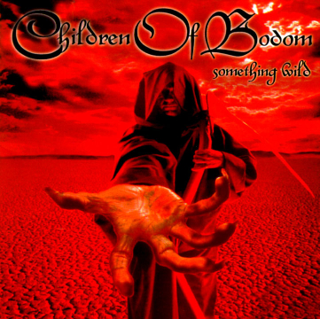
Children of Bodom. Sim, metal do capeta, sim, gostos
estranhos mas já deveriam estar acostumados =).
Apesar de ser meio black metal, é uma das bandas mais
criativas que eu conheço (não querendo dizer que todas as
bandas de black são uma bosta, mas geralmente elas não são
uma fonte de inspiração muito grande), as músicas são muito
bem trabalhadas, lembrando a época que, para tocar rock era
preciso técnica (Black Sabbath é um ótimo exemplo).
A música Dead Night Warrior, muito boa por sinal, tem um
clip que vem no cd, bem produzido e que combina com a
música. Essa música traduz o que é o Children: metalzão com
pegada forte, vocal rasgado, guitarra frenética,
acompanhamento bem pesado da bateria e baixo e o toque
especial do teclado.
Uma coisa que eu gosto deles é que as músicas tem um peso
foda característico do metal mas tem harmonia e composição
com influências do rock ao clássico, que foi o que me
chamou a atenção a primeira vez que ouvi e que me fez
gostar tanto deles.
Como não poderia deixar de comentar, o baixista, Henkka, é
ótimo, o som do baixo é foda e ele cria linhas muito boas,
principalmente quando analisamos outros baixistas de metal,
onde não existem muitos grandes baixistas. Mas o cara é
bom mesmo, sai do básico e com certeza adiciona muito às
músicas.
- Dead Night Warrior
- In the Shadows
- Red Light In My Eyes Pt.1
- Red Light In My Eyes Pt.2
- Lake Bodom
- The Nail
- Touch Like Angel of Death
- SIlent Scream (Slayer cover)
- Don't Stop at the Top (Scorpions cover)
Criado: 2007-08-01T18:07:00.001-03:00
Atualizado: 2008-06-16T11:28:25.688-03:00
Black Sabbath - Black Sabbath
Na minha opinião, o álbum mais clássico deles, mais que o
Paranoid. Eu acho isso porque as músicas são muito bem
trabalhadas, a Black Sabbath (música) que abre o cd é
clássica também.
Bom, todas as músicas são boas, é um dos poucos cds, isso
de todas as bandas, que dá pra ouvir inteiro sem cansar.
Velhos tempos que isso era moda...
Aqui vai o link pra capa do cd escaneada, já que na época
que eu dei upload no Mega Upload e no Badongo eu não tinha
escaneado ainda:
- Black Sabbath
- The Wizard
- Behind the Wall of Sleep
- N.I.B.
- Evil Woman
- Sleeping Village
- Warning
- Wicked World
Criado: 2007-08-31T13:45:00.002-03:00
Atualizado: 2008-06-16T11:31:45.205-03:00
parada
Sim, um tempo fora do ar. Tá, um grande tempo fora do ar,
por motivos infames. Mas fazer o que, é a vida... Claro que
eu não posso justificar isso, mas como dizem os caras de
alguns dos blogs parceiros, eu faço isso porque eu gosto,
não ganho nada. Então eu não tenho o dever de me dedicar
só ao blog =).
Mas agora eu volto a postar, como deu pra ver aí em baixo,
clássico do Black Sabbath e vamo lá, espero que essa parada
não tenha desestimulado ninguém a continuar visitando de
tempos em tempos.
Valeu!
Criado: 2007-08-31T13:58:00.001-03:00
Atualizado: 2007-08-31T16:34:54.872-03:00
Metallica - Kill 'em All
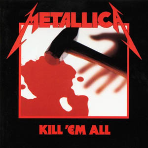
Eu simplesmente choro cada vez que vejo esse cd na minha
estante. "Por que, tá virando queima-rosca??" Ainda não,
mas é porque acho que esse é o álbum mais foda do Metal,
sem contar que foi praticamente o pai do Thrash,
influenciou MUITAS bandas e é lembrado até hoje.
Ele conta com o Cliff Burton no baixo, pra ter uma idéia,
procure nas comunidades do Orkut o nome dele. Vão ter
muitas comunidades do tipo "R.I.P. Cliff" etc etc. O cara
foi o baixista de metal mais foda que já existiu. Ele
morreu num acidente de ônibus na turnê do Master of
Puppets. Se não me engano tem essa historinha na postagem
do cd.
Bom, baixem.
PS: esses dias eu estava "navegando" na internet e achei
esse papel de parede muito a fude da capa do cd, então to
postando ele aqui:
- Hit the Lights
- The Four Horsemen
- Motorbreath
- Jump in the Fire
- (Anessthesia) Pulling Teeth
- Whiplash
- Phantom Lord
- No Remorse
- Seek & Destroy
- Metal Militia
Criado: 2007-08-31T14:03:00.002-03:00
Atualizado: 2008-06-16T11:35:05.575-03:00
4 shared
Nessa última postagem começou uma coisa nova, que é o 4
shared. Ele é um site de hospedagem como muitos outros que
existem por aí, mas com um sistema um pouco diferente. Para
baixar não muda muita coisa, mas ele cria uma pasta virtual
para o dono da conta. Eu acho ele muito bom e aconselho
todos a usarem.
Pra baixar, simplesmente clique no link, vai abrir uma
página em outra janela. Eu botei senha nas pastas por uma
mera questão de "direitos autorais", se é que dá pra usar
essa expressão nessa chinelagem que eu faço. A senha padrão
que eu vou colocar em todas as pastas é
pissanga-thejack.blogspot.com. Sim, o endereço do blog,
como vocês podem ver, simples questão de divulgação, e não
atrapalha muito (um simples copiar e colar ou escrever
mesmo).
Depois de colocar a senha e dar OK, a página carrega um
download, é só esperar um pouco que já aparece o "Download
File" onde dizia "Don't Like Waiting ?". Aí é só clicar e
divertir-se.
Bom, qualquer dúvida eu vou criar uma página explicando
como baixar nos 3 (quem diria) sites de hospedagem que eu
uso aqui. Lembrando, tudo pra maior comodidade e
facilidade de vossa pessoa.
Criado: 2007-08-31T14:21:00.000-03:00
Atualizado: 2007-08-31T16:33:48.906-03:00
Steel Dragon - Rock Star Soundtrack
Imagino que nem todos voces, oh caros leitores tenham tido
a graça de assitir o filme "Rock Star". Bom, se não viram o
filme, logo, não conhecem a "banda" Steel Dragon. Vou
explicar-vos: o filme conta a história de um fan que entra
para a banda que ele adorava. Mais ou menos como o Ripper
do Judas Priest.
Bom, eu não vou contar a história do filme. Mas, a tão
famosa banda do filme se chama Steel Dragon, ela é uma
banda fictícia criada pra esse filme, mas os integrantes
não tem nada de fictícios:
-
Michael Matjevic, vocalista da Steelheart.
-
Zakk Wylde, guitarrista da Black Label Society e atual
do Ozzy, pra quem não conhece o cara, sugiro ouví-lo
nessas duas bandas, por acaso, muito apreciadas pelo
que vos escreve.
-
Jeff Pilson, baixo já tocou com Dio.
-
Jeff Scott Soto, vocalista do Malmsteen nos 2 primeiros
cds.
-
Jason Bonham, bateria. O nome te lembra alguém?? SIM, o
filho do John Bonham!
Esses mais os atores, obviamente. Mas onde eu quero chegar
com essa porcariada toda?? Apesar de não ter passado do
filme, as músicas são MUITO foda! Stand Up é de chorar
quando se ouve, esses dias a Baby Siter (uma banda aqui de
Caxias) toco ela, os caras tiveram que conte as lágrimas.
Quem não viu o filme, sugiro que veja e com certeza vai
querer baixar esse cd.
- Blood Polution
- Crown of Falsehood
- Livin' the Life
- Long Live Rock and Roll
- Stand Up
- Reckless
- Wasted Generation
- We All Die Young
Criado: 2007-09-12T22:10:00.002-03:00
Atualizado: 2008-06-16T11:40:20.344-03:00
Wolfmother - Wolfmother
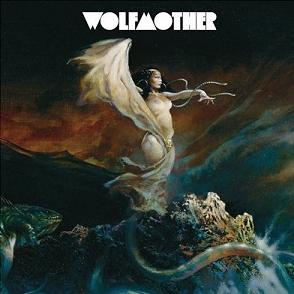
Fugindo um pouco do convencional, trago a vocês a banda
Wolfmother, alguns devem conhecer, é uma banda bem falada
nos últimos tempos. É uma banda "nova" (de 2004, mas pra
mim depois de 1990 é banda nova), mas uma das melhores
coisas que vieram dessa geração perdida de músicos de rock
'n' roll, tenho certeza que exemplos não são necessários.
Eles são em 3 na banda, formação muito pouco comum, Andrew
Stockdale (guitarra e vocal), Chirs Ross (baixo) e Myles
Heskett (bateria), mas não se sente falta da 2ª gruitarra.
Aliás eu acho formações de 1 guitarra as melhores, só
perdendo pra guitarra + teclado (eu ouvi alguém dizendo
"Deep Purple"??).
Falando um pouco da música deles, é uma coisa meio
estranha, lembra um pouco aquele psicodelismo das antigas,
Led Zeppelin, Pink Floyd misturado com os riffs desgraçados
do Black Sabbath. Vale a pena ouvir, claro que não é a
melhor banda do mundo, mas não esqueçam que estamos falando
de uma banda nova ainda, mas que provavelmente tem um bom
futuro.
Valeu!
- Dimension
- White Unicorn
- Woman
- Where Eagles Have Been
- Apple Tree
- Joker & the Thief
- Colossal
- Mind's Eye
- Pyramid
- Wichcraft
- Tales
- Love Train
- Vagabond
Criado: 2007-09-20T16:27:00.001-03:00
Atualizado: 2008-06-16T11:43:15.119-03:00
Rita Lee - Acústico MTv
Grande! Rita Lee Jones (parente do nosso amigo John Paul
Jones?? o.O), um dinossauro do rock no Brasil
(Coke-Luxe...), essa aí é velha de guerra. Já participou um
curto tempo dos Mutantes, outra banda que eu gosto muito
(ótima sugestão para uma próxima postagem).
Para aqueles que não conhecem, sugiro muito baixar esse cd,
afinal não são muitas as mulheres brasileiras que se dão
bem no rock. Aliás, hoje eu estava vendo um programa na MTv
e coincidentemente tava passando um programa sobre a Pitty,
onde ela era apontada como a sucessora da Rita Lee em
termos de rock nacional. Eu fiquei meio desconfiado, na
hora pensei em Shadowside, banda de power metal brasileira
com um vocal feminino muito bom (sugestão:
site da banda
/
vídeo de Highlight),
mas aí eu lembrei que estava vendo MTv e parei de pensar...
Mas voltando à Rita Lee, ela é mesmo uma das pioneiras do
rock "calcinha" do Brasil, uma grande música na minha
opinião. Baixem o cd e tirem suas conclusões.
- Agora Só Falta Você
- Alô! Alô! Marciano
- Balada Do Louco
- Coisas Da Vida
- Deculpe O Auê
- Doce Vampiro
- Eu E Meu Gato
- Flagra
- Gitâ
- Jardins Da Babilônia
- Lança Perfume
- Luz Del Fuego
- M Te Vê
- Mania De Você
- Nem Luxo, Nem Lixo
- O Gosto Do Azedo
- Ovelha Negra
- Papai, Me Empresta O Carro
Criado: 2007-10-24T18:15:00.001-02:00
Atualizado: 2008-06-16T11:48:46.675-03:00
Os Mutantes - Os Grandes da MPB
Uma postagem relâmpago agora, terminei de escrever a de
antes, dei upload em alguns cds antigos e, como prometido,
aqui está um cd d'Os Mutantes. Peço desculpas pela
vagabundagem do cd, mas ele é da minha mãe, uma coleção dos
anos 90, tanto que voces podem ver que eu tive que tirar
uma foto da capa, já que não encontrei de jeito nenhum na
internet. E estou tentando entender até agora onde está a
MPB nas músicas...
Mas Mutantes são Mutantes (e vice-versa), nada se compara a
aquele psicodelismo foda com o som de vinil ainda.
- Balada do Louco
- Tecnicolor
- Panis Et Circenis
- Virginia
- Fuga Nº II
- Lady Lady
- Caminhante Noturno
- Qualquer Bobagem
- Saravá
- Dom Quixote
- Dois Mil e Um
- Vida de Cachorro
Criado: 2007-10-24T22:56:00.002-02:00
Atualizado: 2008-06-16T11:57:00.313-03:00
Boa ação
Resolvi fazer uma boa ação hoje, principalmente porque não
tenho muito o que fazer, o fim de semana foi meio agitado e
hoje estou com uma ressaca de baixa intensidade.
A boa ação é a seguinte: tem uma banda aqui na grande serra
gaúcha que se chama Blackbirds, é uma banda daquele rock
'n' roll que eu tanto prezo. O que acontece é que, mesmo
sendo uma banda muito boa, como sempre, ela não é muito
conhecida.
Então eu venho aqui colocar o site do Trama Virtual, que é
um site de bandas, onde vocês podem achar várias músicas
deles:
Se cadastrando no site dá pra baixar as músicas, mas como
eu sempre digo, baixe, ouça e depois COMPRE O CD!!!
Criado: 2007-10-28T16:06:00.000-02:00
Atualizado: 2007-10-28T16:25:20.793-02:00
10.000 \p/
10.000 visitas desde que coloquei aquele infame contador aí
do lado!
Muito obrigado a todos que vistam o blog nem que seja só
pra olhar e dizer: "puta que pariu, esse cara bebe...".
Pelo menos isso conta como uma visita =)
VALEU!
Criado: 2007-10-28T16:19:00.000-02:00
Atualizado: 2007-10-28T16:43:57.086-02:00
Whitesnake - Whitesnake
Em mais um momento do grande Hard Rock, trago ("trago" \p/)
a vossa presença o igualmente grande Whitesnake. Banda dos
anos 70, seguindo a linha das outras Hard/Glam da época,
mas com um lado mais melódico. Alguns diriam lado gay,
talvez com razão, mas indiscutívelmente é uma ótima banda.
Como ignorar a banda de onde saiu o Steve Vai!? Banda por
onde já passaram Jon Lord e Ian Paice (Deep Purple)!?
Eles têm um lado à lá Mötley Crüe/Poison, com músicas como
"Still of the Night" e "Children of the Night", mas também
têm um lado mais baladinha como "Here I Go Again(1987)" e a
clássica das radiozinhas pop "Is This Love".
Um ótimo CD, não é o primeiro deles como o nome sugere, na
verdade o 10º, bem na fase de transição do Rock para um
Glam Rock. Vale a pena baixar, na minha humilde opinião no
mínimo vale a pena ouvir.
- Still of the Night
- Bad Boys
- Give Me All Your Love
- Looking for Love
- Crying in the Rain
- Is This Love
- Stright for the Heart
- Don't Turn Away
- Children of the Night
- Here I Go Again 87
- You're Gonna Break My Heart Again
Criado: 2007-11-19T20:30:00.001-02:00
Atualizado: 2008-06-16T11:56:45.047-03:00
Megadriver
Mais uma boa ação, pra tentar garantir um lugar no céu. A
algum tempo, uns 2 anos pra falar a verdade, eu conheci uma
banda que fazia covers "metálicos" de grandes clássicos de
video game. Eu pensei "porra, que a fude!". E era mesmo, as
músicas da Megadriver são exatamente isso, versões pesadas
daquelas músicas que a gente cansava de ouvir quando tinha
Aquele Megadrive.
Tem pra todos os gostos, Street Fighter, Castlevania,
Double Dragon, Megaman, só pra citar alguns, todas tocadas
com o peso e a energia do metal. Até algumas combinam
bastante com esse estilo, como a do Top Gear (sim, aquela
clássica) e a Rise from Your Grave.
Eu não vou dar upload nelas porque dá pra baixar todas as
músicas deles no site, www.megadriver.com.br,
é só ir na área de MP3. Dá pra se cadastrar também e
receber mensagem por e-mail de show, notícias, etc.
Criado: 2007-11-24T17:57:00.000-02:00
Atualizado: 2007-11-24T18:17:29.643-02:00
The Who - My Generation (MONO)
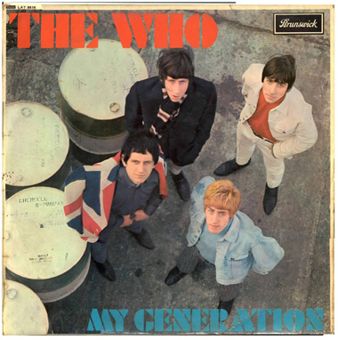
Bom, provavelmente esse vai ser um dos CDs menos baixados,
e log explicarei o por quê. A começar pela banda, que
apesar de ser, na minha opinião, o melhor do rock anos
70-80, é bem subestimada e não muito difundida. Obviamente
se falássemos com o primeiro tiozão que encontrássemos num
bar, ele diria que é uma banda extremamente foda, mas
parece que ela infelizmente se perdeu no tempo.
Segunda razão: essa é a gravação original, direto do vinil,
ou seja, estalos, gravação de baixa qualidade, etc, etc.
Mas então, "Por que ouvir essa merda??" pergunta-me. Bom,
digamos que é a banda como ela é, sem nenhum aparato
digital ou qualquer parafernalha que hoje em dia é usada
pra fazer bandinhas de merda soar como uma grande coisa.
Mas mesmo assim eu decidi postá-lo, já que a minha devoção
à banda é tamanha. Também tem aquela pequena esperança de
todos nós que o rock volte a ser o que foi um dia...
Ah é, não deixem de ler o texto que tem na pasta, ele fala
sobre tudo o que eu falei aqui, a gravação, a banda a
época. Pena estar em inglês.
- Out in the Street
- I Don't Mind
- The Good's Gone
- La-La-La Lies
- Much Too Much
- My Generation
- The Kids Are Alright
- Please, Please, Please
- It's Not True
- I'm a Man
- A Legal Matter
- The Ox
- Circles
- Anyway Anyhow Anywhere
Criado: 2007-11-24T21:06:00.001-02:00
Atualizado: 2008-06-16T12:00:30.795-03:00
Venom - Metal Black
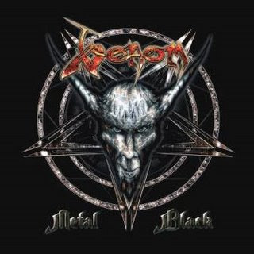
Vovôs do Black Metal!!! Uma das primeiras bandas do estilo,
lá dos anos 80 , do tempo que Iron Maiden tocava em boteco.
Olha as figuras:
O som não é o metal pesado, gritado e guturado (!?!) do
metal preto, mas é o projeto do que um dia será. Mesmo
assim é uma banda muito boa, que eu gosto bastante.
Eles são em 3, clássica formação baixo/vocal, guitarra e
bateria. O baixista/vocalista é um herói só por cantar e
tocar ao mesmo tempo (é bem mais difícil do que parece,
principalmente para um baixista), mas também sabe usar o
instrumento e preenche bem as músicas, nem sentimos a falta
de uma guitarra.
- Antechrist
- Burn in Hell
- House of Pain
- Death & Dying
- Regé Satanas
- Darkest Realm
- A Good Day to Die
- Assassin
- Lucifer Rising
- Blessed Dead
- Hours of Darkness
- Sleep When I'm Dead
- Maleficarum
- Metal Black
Criado: 2008-01-31T15:09:00.004-02:00
Atualizado: 2008-06-20T08:19:08.819-03:00
Lynyrd Skynyrd - Gold
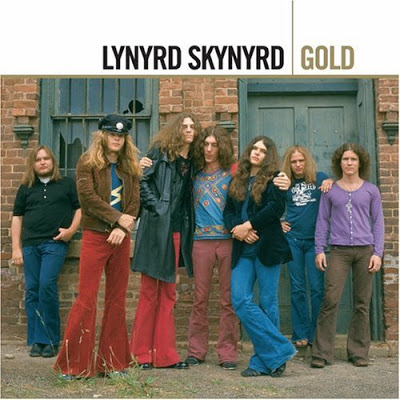
Uma das melhores bandas de rock dos Estados Unidos. Nunca
ouviu falar?? Parabéns, o senhor(a) se encaixa nos 99.87%
da população que não conhecem Lynyrd Skynyrd mas sabe uma
das músicas deles de cor. Pense em um refrão com os
seguintes dizeres: "Sweet home Alabama! Where the skies are
so blue!". "Aaaaaah agora sim!" dizes, e eu entendo.
Mas chegou a hora de se redimir! Corra! Clique em algum dos
links ali no fim da postagem e abrace a maior banda de
southern rock do planeta!!!
Riffs matadores no estilo country das bandas do sul dos
E.U.A. e letras muito boas são algumas das coisas que
encontrarás nas músicas dessa banda, oh pecador. O que está
esperando!? Baixe os cd logo!
P.S.: Sim, é uma coletânea das mais chinelas, mas é o que
eu posso oferecer agora. Em breve mais cds. Calma, eu
também tenho vida =)
- Sweet Home Alabama
- I Ain't the One
- Was I Right or Wrong
- Gimme Three Steps
- Workin' for MCA
- Simple Man
- Swamp Music
- The Ballad of Curtis Loew
- Saturday Night Special
- Mr. Banker
- Comin' Home [original version]
- Call Me the Breeze
- Free Bird
- What's Your Name
- Whiskey Rock-A-Roller (live)
- Tuesday's Gone
- Double Trouble
- I Know a Little
- Four Walls of Railford
- I Never Dreamed
- Gimme Back My Bullets
- You Got That Right
- All I Can Do Is Right About It (acoustic version)
- That Smell
- Free Bird (live)
Criado: 2008-02-05T21:32:00.003-02:00
Atualizado: 2008-06-20T08:24:55.233-03:00
AC/DC - Let There Be Rock
Voltando depois de um coma virtual, trago à vocês muito
rock and roll pesado e barulhento: um dos melhores cds do
AC/DC!
Esse aí é dos antigos, ainda com o falecido Bon Scot nos
vocais, um cd onde a banda ainda está começando a caminhar
na direção do som que faria eles famosos no mundo todo, que
já foi exaustivamente descrito em outras postagens. O que
interessa é que nesse cd há muitos momentos de cacofonia e
caos, mas sem apelar para o exagero. É um dos cds deles que
eu mais gosto (só de curiosidade as músicas foram copiadas
do meu cd =) ), eu acho que a banda entrou em um estado de
êxtase na hora da gravação, e o som saiu pesado e forte,
realmente muito bom.
Visto que é o terceiro "internacional" deles, é uma mostra
do poder que eles tinham e que ainda não perderam. É só
botar pra tocar o cd e se deliciar com o bom e velho AC/DC.
- Down
- Dog Eat Dog
- Let There Be Rock
- Bad Boy Boogie
- Problem Child
- Overdose
- Hell Ain't a Bad Place to Be
- Whole Lotta Rosie
Criado: 2008-04-29T17:54:00.012-03:00
Atualizado: 2008-06-20T08:27:06.187-03:00
Megadeth - Unplugged Live in Buenos Aires
Agora um cd da série "achei sem querer". Um belo dia fui
olhar minha pasta de cds baixados mas não ouvidos ainda
(que já beira os 8 GB o.O) e achei esse cd. Resolvi ouvir,
já imaginando a merda que seria um Megadeth acústico. Eis
que vem a primeira música, e nos 20 segundos eu já me
arrependi de qualquerblasfêmia infundada que passou pela
minha cabeça.
A mistura Megadeth + acústico, no melhor estilo "boteco", é
muito boa, realça a melodia sempre presente nas músicas
deles, além da voz muito foda do nosso amigo Mustaine. Um
ótimo cd pra ser surpreendido. Na verdade nem é um cd
oficial, é um bootleg, mas como isso aqui é uma zona
completa, acho que não haverá problemas. Nota dez, pena a
qualidade não ser de um cd...
Obs: Peço desculpas aos que baixaram o arquivo do Badongo,
o servidor deles não estava querendo colaborar e o arquivo
acabou indo pela metade (na verdade 0,2 %). Mas agora já
está consertado.
- I'll Get Even
- A Tout Le Monde
- Countdown to Extinction
- Almost Honest
- Trust
- Angry Again
- Use the Man
- Anarchy in the U.K. (Sex Pistols)
- Symphony of Destruction
- My Sweet Lord (George Harrinson)
Criado: 2008-05-05T09:27:00.013-03:00
Atualizado: 2008-06-20T08:31:24.967-03:00
Grand Funk Railroad - Red Album
Obs: o site do 4shared está de bom humor hoje, então vocês
serão presenteados com mais cds.
Não sei se eu não conheço as pessoas certas, mas sempre que
peço pra alguém se ele conhece Grand Funk, me dizem que
não. Já fui até chamado de "meio louco" (pelo vocalista da
minha banda) por isso. Mas isso não interessa, o que
interessa é que eles são muito bons. Era uma das bandas
mais famosas nos E.U.A. nos anos 60 e 70.
O som é uma mistura de funk (o verdadeiro, por favor),
blues, rock e tudo mais que se possa imaginar. Outra coisa
muito interessante é que eles são em 3: guitarra-vocal,
baixo e baterista com black power (apesar de não ser preto:
a figura da direita nessa foto), mas não deixam nada a
desejar, até dão uma surra em muitos bandas com bem mais
integrantes.
Esse é o 2º cd deles, considerado um dos seus melhores e o
início do seu sucesso, apesar de eu gostar bastante do
primeiro também. Um dia coloco ele aqui pra vocês darem o
veredito.
- Got This Thing on the Move
- Please Don't Worry
- High Falootin' Woman
- Mr. Limousine Driver
- In Need
- Winter and My Soul
- Paranoid
- Inside Looking Out
Criado: 2008-05-05T10:14:00.009-03:00
Atualizado: 2008-06-20T08:33:33.779-03:00
Pink Floyd - The Piper at the Gates of Dawn
Oh mestres do rock, perdão! Eu cometi o infame pecado da
omissão! Como pude ser tão cego a ponto de ignorar
veementemente uma das maiores bandas da história. Venho
diante de vós me redimir com essa postagem. Amém!
Bom, após minha prece eu deixo vocês se deliciarem com o
que o progressivo tem de melhor: Pink Floyd! Uma das minhas
bandas do coração, uma das melhores bandas da face da
terra, um dos melhores achados da minha vida \p/. Deixando
a emoção de lado, quem não conhece Pink Floyd por favor se
mate. Ou baixe esse cd e passe a conhecer e idolatrar...
Obs: O autor desse blog não se responsabiliza por eventuais
danos cerebrais (Brain Damage \p/) que a mera amostra desse
cd pode causar.
Obs²: Descobri ontem que o Syd Barret (o cara mais drogado
e maníaco depressivo que tu pode imaginar e
coincidentemente ou não o guitarrista desse cd e principal
letrista dos dois primeiros cds) morreu a uns dois anos.
Peço um minuto de cacofonia em homenagem a ele.
- Astronomy Domine
- Lucifer Sam
- Matilda Mother
- Flaming
- Pow R. Toc H.
- Take Up Thy Stethoscope and Walk
- Interstellar Overdrive
- The Gnome
- Chapter 24
- The Scarecrow
- Bike
Criado: 2008-05-09T10:01:00.010-03:00
Atualizado: 2008-06-20T08:36:09.142-03:00
Algumas mudanças
Algumas mudanças no blog para ele ficar mais bonitinho, não
muito grandes, mas bonitinhas mesmo assim. Além disse eu
coloquei uma enquete (de formatação bem vagabunda, diga-se
de passagem, mas é o que tinha...) que provavelmente não
vai dar em nada, mas não deixem de votar.
Por hora, é isso!
Criado: 2008-05-09T15:31:00.003-03:00
Atualizado: 2008-05-09T15:44:19.824-03:00
Black Sabbath - Master of Reality
Observação: palmas para uma das capas de cd mais vagabundas
da história!
Sem vontade de escrever hoje. =D
- Sweet Leaf
- After Forever
- Embryo
- Children of the Grave
- Orchid
- Lord of This World
- Solitude
- Into the Void
Criado: 2008-05-21T08:20:00.006-03:00
Atualizado: 2008-08-08T23:50:23.852-03:00
Van Halen - 1984
Livro do Apocalypse (14:67): "Acordarás todo dia e agradecerás
ao santo de todos os santos, Eddie Van Halen."
Parte auto-explicativa:
- 1984
- Jump
- Panama
- Top Jimmy
- Drop Dead Legs
- Hot for Teacher
- I'll Wait
- Girl Gone Bad
- House of Pain
Criado: 2008-06-20T13:24:00.007-03:00
Atualizado: 2008-06-20T14:03:12.581-03:00
Kiko Loureiro - No Gravity

Mudando um pouco o enfoque, vamos para a guitarra
instrumental. Kiko Loureiro, para quem não conhece, toca
no Angra. Esse é um álbum muito bom, principalmente por ser
brasileiro. Pergunta: quantos guitarristas no Brasil se
arriscam a fazer um cd instrumental? Talvez me responda:
"Muitos, tu que não conhece.". Até pode ser, mas quantos
são realmente bons? "Muitos.". Mas quantos realmente são
expressivos? Aí que mora o problema.Não só em relação ao
gênero instrumental, muitos outros estilos são deixados no
underground: blues, jazz, até a MPB e o samba estão sendo
deixados de lado. E a culpa é de quem?? Na minha humilde
opinião, é sua. Deixamo-nos ser levados pela "grande mídia"
(odeio essa expressão, mas fui obrigado a usá-la),
aceitamos tudo embalado e mastigado. Quantos artistas estão
lá na loja de cds, esperando serem ouvidos para mostrar
como trabalharam e se esforçaram para ter seu representante
naquele lugar?
Então proponho um desafio, caro leitor assíduo: vá a uma
loja de cds e compre um cd daquela banda que você sempre
ouviu falar mas nunca teve vontade de ouvir. Provavelmente,
se você gosta do que tem aqui no meu blog, esse cd não vai
passar dos 20 reais. É muito provável que o senhor se
impressione com a qualidade das obras de certos artistas.
Não custa tentar.
Na verdade custa sim, mas pense um instante comigo. "Cds
são muito caros, baixo da internet e não pago nada.",
muitos dizem. Nunca passou pela sua singela mente que isso
apenas aumenta o preço dos cds ainda mais?? Como qualquer
profissional, o músico tem que ganhar dinheiro de alguma
forma. Compare com um médico: uma consulta sai por uns 50
reais. É pedir demais pagar 20 reais pelo trabalho de uma
vida inteira de um músico?? Além do mais, menos de 50% do
preço do cd vai para os caras que tocam nele.
Agora vá para um quarto silencioso e reflita sobre o que
foi escrito aqui.
Ah é, o cd é muito bom.
- Enfermo
- Endagered species
- Escaping
- No gravity
- Pau-de-arara
- La force de L'Âme
- Tapping into my dark tranquility
- Moment of truth
- Beautiful language
- In a gentle way
- Dilema
- Feliz desilusão
- Choro de criança
Criado: 2008-08-27T10:36:00.011-03:00
Atualizado: 2008-08-27T16:05:17.690-03:00
Sex Pistols - Never Mind the Bollocks
O que dizer de uma banda que lançou 1 (hum) álbum de
estúdio e, não obstante, é parte do inconsciente de todos??
Baixem!!!
Criado: 2008-10-09T12:40:00.005-03:00
Atualizado: 2008-10-31T11:49:58.813-02:00
The Doors - The Doors
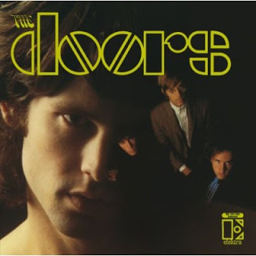
The Doors mostrando como se faz.
Gostou do CD?? Parabéns, você é louco.
PS: Achei um vídeo ótimo para representar essa banda.
PPS: Eu gosto de The Doors e gosto de pessoas loucas.
Criado: 2008-11-01T11:06:00.006-02:00
Atualizado: 2009-04-02T23:24:52.476-03:00
Pink Floyd - The Division Bell
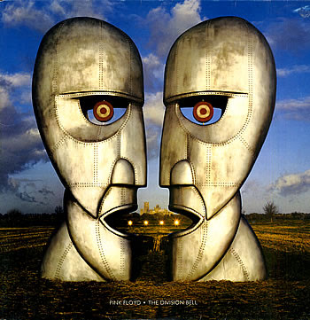
Não é incrível o que se pode conseguir com R$ 16,90 e algum
tempo de procura?? Não?? Pois eu consegui essa obra-prima do
Pink Floyd usando tais métodos. Não que eu seja mão-de-vaca
("mão-de-vaca" segundo o movimento fundado por mim, o FNRP*, um
dia escrevo sobre ele) , eu sou pobre mesmo. O que eu quero com
essa conversa?? Convencê-lo a baixar o cd e, como eu, comprá-lo
após inteirar-se da sua excelente qualidade.
*Foda-se as Novas Regras do Português
Diretamente do cd supracitado:
Criado: 2009-04-02T22:51:00.008-03:00
Atualizado: 2009-04-03T11:40:30.090-03:00
Crown Heights Affair - Sure Shot
Hope you like some Funk, white boy. And you should!
E aproveitem meus momentos de dedicação ferrenha ao blog!
Criado: 2009-04-03T11:30:00.009-03:00
Atualizado: 2009-04-04T12:57:13.892-03:00
Eagles - One of These Nights
O que dá a mistura de cobra com porco-espinho??
Arame-farpado!!
E o que dá a mistura de coutry com rock??
Eagles!!
Obs: se você for mente fechada, vá tomar um café em vez de
baixar esse disco.
Criado: 2009-04-12T23:46:00.007-03:00
Atualizado: 2009-04-13T00:08:51.544-03:00